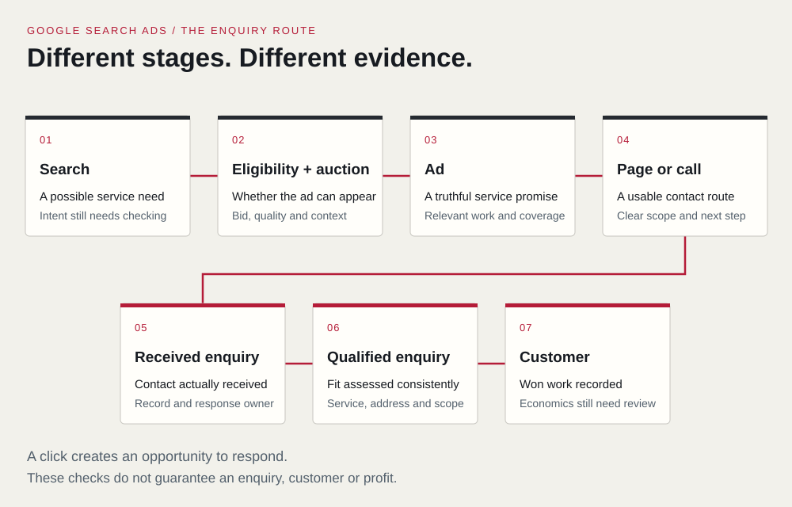

Google Ads can put your business in front of someone searching for a service you offer. A click gives you an opportunity to respond to that need. Whether it becomes a useful enquiry depends on the search, your offer, the page or call experience, and what happens after contact.
For a service business, that distinction matters. A campaign can generate traffic while bringing in requests you cannot fulfil, calls nobody answers or enquiries that never receive a quote.
This guide focuses on Google Search ads: ads associated with searches for services. Google Ads also includes other campaign types, which work differently. Here, we follow the route from a search to an enquiry, then show how to evaluate the next steps without mistaking clicks for customers.
What happens between a search and a customer?
Say you run a landscaping business that builds residential gardens in selected Perth suburbs. This example is hypothetical. Someone searches for “landscaping quote Perth”. A useful advertising journey could look like this:
- The search is relevant to the service and the campaign is eligible to participate.
- An auction determines whether an ad appears and its position relative to eligible ads.
- The person sees an accurate offer and visits the relevant page or contacts the business through an available ad feature.
- The business receives an enquiry and checks the project, service address and contact details.
- An appropriate team member follows up, prepares a quote if suitable and records the outcome.
Each step answers a different question. A relevant search suggests a possible need. A received enquiry establishes contact. Qualification checks whether the work fits. A won job establishes a commercial outcome.
Google Ads can help with the opportunity to be found. Your business still needs a service people want, an honest offer and a workable response process.

Keywords connect ads with searches, but they are different things
A keyword is a targeting input selected by the advertiser. A search term is what the person actually searches for. The relationship between them depends on matching rules and campaign settings.
Google describes broad, phrase and exact match using relationships of meaning and intent. Exact match can include searches with the same meaning or intent; it does not require identical wording. Phrase and broad match allow different degrees of expansion. Broader reach can reveal useful demand, but it also makes measurement and review important. See Google's keyword matching guidance.
The practical question is whether a search represents work you want to receive. For the fictional landscaper:
| Hypothetical search | What it may suggest | Decision to investigate |
|---|---|---|
| landscaping quote Perth | Someone comparing a project with providers | Explain project scope, service area and the quote process |
| garden maintenance Perth | A different, possibly recurring service | Advertise only if the business offers that work |
| landscaping jobs Perth | Someone looking for employment | Consider excluding employment searches from this sales campaign |
| free landscaping quote Perth | A potentially relevant request | Do not exclude “free” automatically if a free quote is genuinely offered |
These are interpretations to check, not predictions of which searches a particular keyword will trigger. Search language alone does not confirm a person's budget, eligibility or readiness to book.
Negative keywords help exclude unsuitable searches
Negative keywords can restrict searches you do not want to target. Choose them around the service and the purpose of the campaign, rather than copying a generic exclusion list.
Their matching rules differ from positive keywords. Google's current documentation says they handle capitalisation and misspellings automatically, while synonyms and singular or plural forms may need separate consideration. They do not exclude every related concept. Review the negative keyword rules before making changes.
Use the search terms report to examine available queries alongside enquiry quality. It is a partial view: some queries are omitted for privacy, and aggregated insights do not reveal every individual search. Google's search terms report guidance explains that limitation.
The auction considers more than the highest bid
Advertising space is not allocated simply to whoever offers the most money. Google's Ad Rank documentation describes factors including the bid, ad and landing page quality, thresholds, competition, the search context and the expected effect of ad assets and formats.
That means increasing a bid does not remove the need for a relevant ad and a useful destination. Neither a selected keyword nor an approved ad guarantees visibility for every search.
You may also encounter Quality Score, a diagnostic score shown for keywords. Google explicitly says it is not an input into the ad auction or a business KPI. It can help identify areas to investigate, such as ad relevance or landing page experience. A higher score does not establish that you are winning suitable work profitably.
Paying per click is different from choosing a bidding objective
Google describes Search ads as using cost-per-click charging. A click is not a guaranteed enquiry.
A bidding strategy can aim for conversions while the ads are charged by click. For example, Target CPA seeks conversions at a desired average cost per action. It does not make every enquiry cost exactly that amount or mean that you pay only when a qualified customer contacts you. Some conversions may cost more and others less. Google's Target CPA guidance describes the strategy and its requirements.
Before judging a bidding strategy, check what the account defines as a conversion. Optimising towards the wrong event can make a report look encouraging while the business receives little useful work.
Location settings need to match how customers buy
An advertiser's location settings do not create a precise fence around potential customers. Google infers location using available signals, and different settings can include people interested in a place as well as those present there.
For a strictly local service, review whether targeting people present or regularly present in the area better fits the campaign. However, someone outside Perth might legitimately arrange landscaping for a property in Perth. The right choice depends on how customers buy, rather than a universal rule to exclude everyone outside the service area.
Google explains the options and their accuracy limits in its advanced location guidance. Confirm the service address during qualification. A person's estimated location does not establish where the work is needed.
The ad and destination should make the same useful promise
Someone searching for a landscaping quote needs enough information to decide whether contacting you is worthwhile. Your ad and page should help answer:
- Do you provide this particular service?
- Do you work in the area where it is needed?
- What happens when someone requests a quote?
- What relevant evidence supports your offer?
- How can someone make contact, and what should they expect next?
A dedicated service page can make those answers easier to find. A homepage can also work if it serves the same need clearly. The test is the visitor's task, rather than a rule that one page type always converts better.
Keep claims consistent with the service you can deliver. Do not advertise emergency availability, a free quote, qualifications or a response time unless the claim is accurate and supportable. The ACCC's guidance on misleading claims applies to advertising and websites; qualifications should not contradict the overall impression.
Check the contact journey on mobile. A form submission should reach the intended person, and a phone option should lead to a number your business can handle. A working button is only part of that journey. Someone must own the response and record what happened.
Define a conversion before treating it as success
“Conversion” means a configured action in the account. It is not automatically a sale or a qualified enquiry.
For a service campaign, distinguish these events:
| Event | What it tells you | What it does not establish |
|---|---|---|
| Contact button click | Someone tried a contact route | A call connected or a message arrived |
| Received enquiry | A contact was received | The requested work is suitable |
| Qualified enquiry | It meets agreed fit criteria | A quote will be accepted |
| New customer | The business records a won customer | The advertising caused an incremental sale or made a profit |
Agree qualification criteria with the people handling the work. These could include an offered service, an address within coverage and usable contact details. Apply the criteria consistently, and keep unsuitable or unresolved enquiries visible in the records.
Review which conversion actions actually guide bidding. Primary actions normally do so when their associated goal is used by the campaign; secondary actions are normally observational. An important exception is that secondary actions included in a custom goal can be used for bidding. Google's primary and secondary conversion guidance explains the distinction.
Avoid counting the same business outcome twice because it arrives through different tracking routes. For reporting, also distinguish two enquiries from two actions by the same person: someone might submit a form and then call about the same job.
Where appropriate, later qualified or won outcomes can be sent back through supported offline conversion methods, including enhanced conversions for leads. That requires suitable data, implementation and permissions. It does not guarantee complete attribution. Choose a bidding signal that is meaningful and reliably available; the deepest stage is not automatically usable simply because it matters most commercially.
Measurement also involves privacy decisions. Google's customer data policies set conditions for using customer data and prohibit sensitive-category conversions from enhanced conversions measurement. Check eligibility before sharing data. The OAIC provides Australian guidance on tracking pixels and privacy obligations. Check which privacy obligations apply to your business, what information is collected and shared, the disclosures and permissions required, and any sensitive information involved. Hashing identifiers does not settle those obligations.
A daily budget is an average, not a fixed daily bill
For most campaigns using an average daily budget, Google describes daily charging limits of twice that budget and monthly limits of 30.4 times it. The rules depend on the campaign and budget type, and changing the budget affects the calculation. Read Google's average daily budget explanation and budget change rules.
Keep media spend separate from campaign management, page work, tools and sales follow-up costs. Agree what is included when comparing proposals or results.
There is no single sensible starting budget for every Australian service business. Your decision needs to account for likely demand and click costs, the value and cost of the work, how much uncertainty you can afford, and your capacity to respond. A budget figure alone does not establish how quickly useful evidence will arrive.
A worked example: clicks, enquiries and customers have different costs
The following figures are entirely hypothetical. They are not Australian benchmarks, a quote, a forecast or results achieved by Ranking Rebels.
For this example, enough time has passed to assess the enquiries and sales from one tracked group of ad clicks. The records link 150 clicks to 30 unique received enquiries, 12 qualified enquiries and three new customers. The qualified enquiries are a subset of the 30; the customers come from that same group. Repeated contact about the same job is deduplicated.
All amounts are AUD and use one consistent cost basis, excluding GST for this arithmetic example.
| Measure | Calculation | Result |
|---|---|---|
| Media spend | Given | AUD 1,500 |
| Average cost per click | 1,500 ÷ 150 | AUD 10 |
| Media cost per received enquiry | 1,500 ÷ 30 | AUD 50 |
| Media cost per qualified enquiry | 1,500 ÷ 12 | AUD 125 |
| Media cost per attributed new customer | 1,500 ÷ 3 | AUD 500 |
| Included marketing cost per new customer | (1,500 + 600) ÷ 3 | AUD 700 |
The final row adds a hypothetical AUD 600 of campaign management and page work allocated to that same group. It includes only those stated costs. It is not a complete company-wide customer acquisition cost.
These calculations still do not establish profit. You would need the work's revenue, delivery costs, other relevant costs and a defensible view of attribution. A value assigned to a lead is not realised revenue. Attributed customers are also different from customers proven to have been gained because of the advertising.
In practice, records may be incomplete and sales can take time. Keep recent enquiries with unresolved outcomes separate rather than treating them as lost or combining them with customers from older campaigns. Label an unresolved group as provisional and record the reporting cut-off and follow-up period. If a denominator is zero, report that measure as unavailable.
To extend that review to completed work and the business’s costs, our guide to measuring marketing results separates attributed revenue, contribution and incremental impact.
What should you investigate when results disappoint?
Use the point where the journey breaks to choose the next investigation:
| Observation | Useful investigation |
|---|---|
| Ads rarely appear | Check eligibility, demand, targeting, budget and auction competitiveness |
| Available queries suggest unrelated needs | Review matching, exclusions and what the campaign is offering |
| Relevant clicks produce few received enquiries | Check the promise, destination, contact routes and tracking |
| Enquiries arrive but few fit | Review service scope, geography, expectations and qualification records |
| Suitable enquiries rarely become customers | Examine response ownership, quotes, availability and sales outcomes |
| Customers are recorded but economics remain unclear | Reconcile costs, revenue, delivery costs and attribution limitations |
These are starting points, not diagnoses. A small sample or broken tracking can change the apparent pattern. Make changes around a stated problem, record them and allow for the business's actual sales cycle before reaching conclusions. There is no universal number of days that proves a campaign has succeeded or failed.
What can a well-managed Search campaign offer?
Search advertising can help a service business reach people expressing relevant needs, control parts of its targeting and investment, test an offer and learn which enquiries fit. Those benefits depend on suitable demand, accurate measurement, useful pages and consistent follow-up.
It can complement SEO, but paying for ads does not buy organic rankings. Google makes that separation clear in its paid and organic search guidance.
Before committing, be able to describe the service, area, offer, contact route, conversion definitions, budget boundaries and person responsible for follow-up. That gives you a campaign you can evaluate against the work your business actually wants.
If you would like to discuss that scope, explore Ranking Rebels' paid advertising services. Bring your current service page and the way you record enquiries; they help make the discussion concrete.